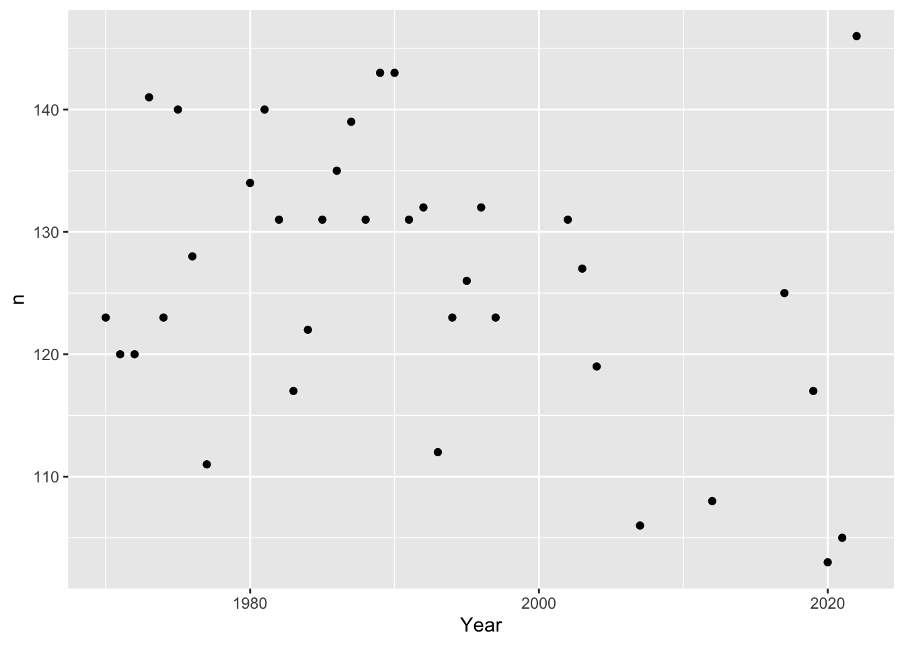
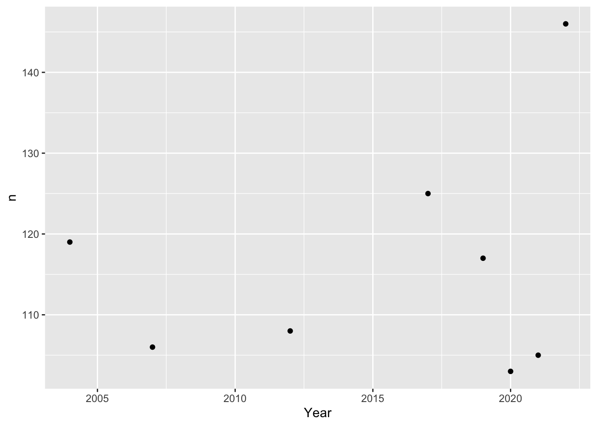
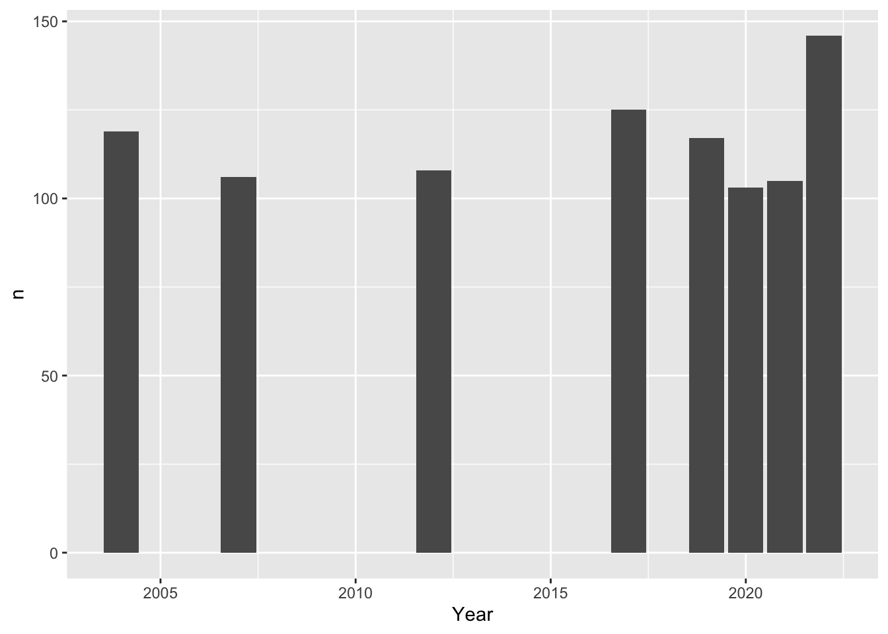
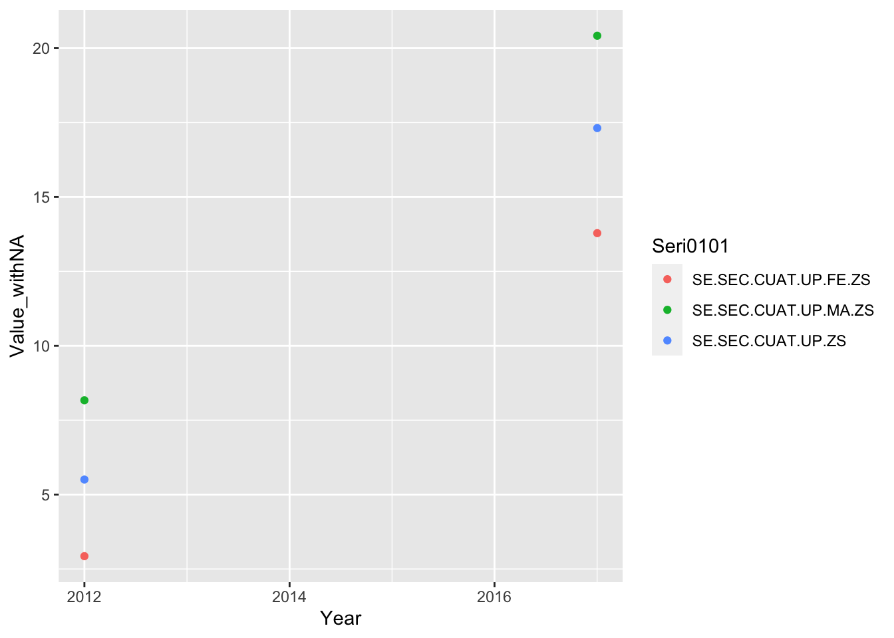
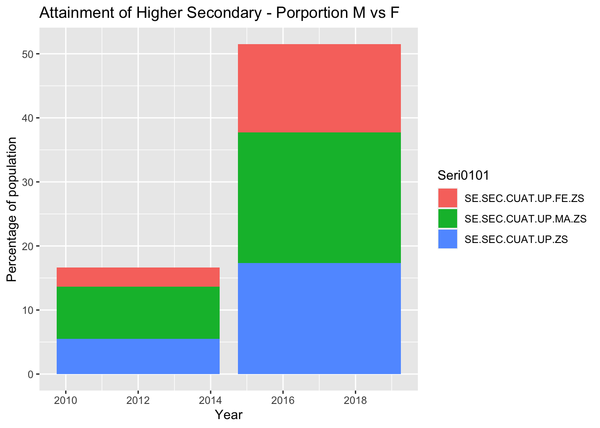

── Attaching core tidyverse packages ──────────────────────── tidyverse 2.0.0 ──
✔ dplyr 1.1.2 ✔ readr 2.1.4
✔ forcats 1.0.0 ✔ stringr 1.5.0
✔ ggplot2 3.4.2 ✔ tibble 3.2.1
✔ lubridate 1.9.2 ✔ tidyr 1.3.0
✔ purrr 1.0.1
── Conflicts ────────────────────────────────────────── tidyverse_conflicts() ──
✖ dplyr::filter() masks stats::filter()
✖ dplyr::lag() masks stats::lag()
ℹ Use the conflicted package (<http://conflicted.r-lib.org/>) to force all conflicts to become errors
library(readxl)library(lubridate)
About this Draft
This is partial draft of the final project. Throughout, I have listed questions that I intend to resolve, and areas for further development. As part of including possible questions and visualizations.
Here is my biggest question: Thus far, I have been working with data in an extremely long form – wherein variables are listed in a single column represented as an indicator name. In other words, each indicator name represents a combination of values such as gender, level of schooling, indicator type such as % attainment or % net enrollment.
As of now, the “value” column of my dataframe contains numbers that all represent different kinds of values … the column is meaningless unless I select a group of indicators that all have values of a similar type. So I have been doing just that - selecting a set of indicators that are the same type of observation (and therefore have values of the same type), creating a dataframe for that group, and plotting it accordingly.
I wondering if I have gone down the wrong path, though, and should have tidied the entire dataset so that each row is a unique observation of year, indicator type, gender, level of schooling, etc.
I would appreciate any advice!
Introduction - Draft, to be expanded after analysis
Using data compiled by the World Bank over the last half-century, this report compares changes in participation and outcomes across males and females in the Bhutanese education system in the context of changes in the teacher population and national education reforms. This report looks at trends in girls’ and women’s educational participation and attainment in last 25 years, with special attentin to years since Bhutan’s political transition to democracy (in 2008). The discussion contextualizes these trends within major developments in Bhutan’s modern secular education system.
World Development Indicators
The Development Data Group at the World Bank collects, compiles, and disseminates statistical and data work and maintains macro, financial and sector databases for countries and regions worldwide. According to the World Bank Open Data website, the majority of data comes from the statistical systems of member countries; therefore, while the Development Data Group upholds professional standards for quality and integrity, the quality of these data ultimately depend on the practices of the member countries. To support the larger goal of generating and making available good-quality statistical data on all aspects of development, the Development Data group coordinates with the Bank’s Global Practices and regional groups to “help developing countries improve the capacity, efficiency, and effectiveness of national statistical systems.” (https://data.worldbank.org/about) Not only do timely and reliable statistics support the critical management decisions of the countries themselves, they inform the World Bank’s broad development strategy.
More information about the World Bank’s databases and global statistical strategy can be found here.
The World Development Indicators (WDI) is a centralized compilation of development indicators from international sources that are officially recognized by the World Bank. WDI presents the most accurate global development data that is currently available, and its database includes national, regional, and global estimates. The data used in this report are all sourced from the WDI collection on the Kingdom of Bhutan, which is organized by series (Economic Policy & Debt, Education, Environment, Financial Sector, Gender, Health, Infrastructure, Poverty, Private Sector & Trade, Public Sector, Social Protection & Labor, and Social: health) which each have many sub-categories. Each indicator (for example, “Adjusted net enrollment rate, primary, female (% of primary school age children)”) is published with a definition, source, (eg. UNESCO Institute for Statistics. Data as of February 2020.), and details such as periodicity and aggregation method.
For each indicator’s specific dataset, the Development Data group has published short descriptions of the statistical concept and methodology, development relevance, and limitations and exceptions to the indicator. This documentation is crucial for interpretation of Bhutan’s data, as the Kingdom’s processes and standards for data collection and its participation in international surveys and data-sharing have all changed dramatically since 1960, when the WDI was established. Indeed, the first data from Bhutan for any indicator appears in 1970. This corresponds with the establishment of a statistical cell within Bhutan’s Ministry of Development in 1971, the same year that Bhutan became a member of the United Nations. These events marked a major shift in Bhutan’s development paradigm, away from isolationist policies toward the development of international relations and diplomacy. It also marked the beginning of rapid modernization of the whole nation, including development of secular education. This development - among other other social, political, economic and environmental changes - has brought profound societal transformation.
Development Indicators for Bhutan: Education and Gender
The complete tabular dataset of nearly 1500 time series WDI for Bhutan is available for download on the World Bank’s Data Development country page for Bhutan. The country page presents some basic plots showing trends for particular indicators over time. The World Bank databank allows users to query and download a tabular dataframe of specific indicators for a set of dates. This report thereby pulls from two series of World Development Indicators for Bhutan, “Education” and “Gender”, across the years 1970-2022 into a combined dataframe.
#read in dataBhutanWDI<-read_csv("_data/Bhutan_WDI_Edu.csv")%>%select(-"Country Name", -"Country Code", -"Series Name")
Rows: 152 Columns: 57
── Column specification ────────────────────────────────────────────────────────
Delimiter: ","
chr (57): Country Name, Country Code, Series Name, Series Code, 1970 [YR1970...
ℹ Use `spec()` to retrieve the full column specification for this data.
ℹ Specify the column types or set `show_col_types = FALSE` to quiet this message.
In the resulting dataframe, columns represent the years between 1970 and 2022, with each row being an indicator represented by a code. Each value in the dataset is a unique observation of an indicator in a particular year. All values are numeric, with a mixture of discrete and continuous data depending on the indicator. Most values represent percentages of a population or expenditure, ratios (eg. pupil-teacher ratio), points on a scale (eg. scale 1-100 on the Women Business and the Law Index Score, or the Gender Parity Index), or years (eg. of compulsory education).
The metadata for each indicator (the name and description for each code) can be seen in a corresponding Metadata dataframe.
# read in metadataWDImetadata<-read_csv("_data/Bhutan_WDI_Edu_Metadata.csv",skip =153)
Rows: 147 Columns: 12
── Column specification ────────────────────────────────────────────────────────
Delimiter: ","
chr (12): Code, License Type, Indicator Name, Long definition, Source, Topic...
ℹ Use `spec()` to retrieve the full column specification for this data.
ℹ Specify the column types or set `show_col_types = FALSE` to quiet this message.
The Education indicators can be classed into the following “series”: Efficiency, Inputs, Outcomes, and Participation. Here is a sample group of indicators in the Participation series, all relating to school enrollment:
School enrollment can be understood as an indicator group, wherein school enrollment is observed for each unique combination of the following variables: 3 levels of schooling, genders, and by % of gross or net enrollment. It also includes a gender parity index for each level of schooling, which is calculated by dividing the female rate by the male rate. One can see each combination of variables within this group represented in the corresponding code for each indicator.
Other indicator groups in the Participation series include: - number of pupils (across primary and secondary school, and genders); - children/adolescents out of school (across primary and secondary school, and genders); - adjusted net enrollment rate for primary school (across genders).
In the Outcomes series, indicator groups include: - duration education in years (for pre-primary, primary, secondary, and total compulsory education) - educational attainment of adults >25 (cumulative completion of each level of education, total and across genders) - completion rate (for primary and lower secondary school, total and across genders) - literacy rate (for youth and adult, total and across genders)
In the Inputs series, indicator groups include: - number of teachers (primary, secondary, and tertiary levels, total and across genders) - % trained teachers (pre-primary, primary, lower secondary, secondary, and upper secondary levels, total and across genders)
In the Efficiency series, indicator groups include: - gross and net intake ratios in grade 1 (total and across genders) - over-age students in primary school (total and across genders) - persistence to grade 5 (total and across genders) - progression to secondary school (total and across genders) - repeaters (total and across genders)
For any given year with data, the WDI series for education can be used to compare male and female enrollment, persistence, and completion of different levels of schooling, and where they deviate from the standard progression for their age group. These series also allow us to compare adults’ educational attainment and literacy. Furthermore, these WDI can be used to compare the gender ratios of teachers, and their respective levels of training, in each level of schooling – allowing us to see any relationships between changing gender rations among teachers and student trends.
Rationale for this report - Draft, to be expanded after analysis
Bhutan is praised for its relative gender equity in society with respect to its country neighbors in Asia, but inequities persist and there seems to be some denial amongst the national and school leadership about the persistence and extent of gender inequity in schools. When I was working on the development of the Bhutan Baccalaureate for the Royal Secretariat, I experienced resistance to my suggestions that institutional policies must be sensitive to gender differences, and more data must be collected on the experiences of girls and women within schools. Furthermore, I was concerned that girls’ and women’s enrollment seemed low or inconsistent, and this was explained as a consequence of demands for household, family, or agricultural labor. Since the establishment of Bhutan’s first democratic government in 2008, some national policies have highlighted the need for improving inclusion and outcomes for female youth, by and large these stated values and priorities have not been translated into programs and practices within schools.
Focus of analysis - Draft, to be expanded after analysis
This exploration of the World Bank’s Global Development Indicators related to education and gender is intended to explore the relationships among educational access, participation, and attainment across genders, in order to describe patterns in female student engagement and outcomes over the past 25 years of collected data (1997-2022), with particular attention to patterns since the establishment of the first democratic government. I will look for variation in female enrollment with respect to major educational reforms and policy changes, and a possible relationship between trends in female student persistence and attainment with changes in the gender ratio and training of teachers.
These data can give us a view on girls’ and women’s access to and persistence in education - their bare participation - but the data can not give insight into the dynamics of inclusion within schools, nor the external conditions (eg. personal, familial, cultural, social, economic) which interfere with girls’ or women’s access to education. I will draw upon my research and personal experience working to develop Bhutan’s education system to contextualize the observed trends and suggest possible hypotheses for further investigation.
Throughout this report, I will highlight the perceptible lacks and weaknesses in data, and emphasize the need for more extensive research on the situation of female Bhutanese to better diagnose sources of educational discrimination and exclusion. Without continuous collection of high quality data, it will be impossible to detect and understand problems, design interventions, and know when they are successful.
Patterns in Bhutan’s Data Collection - Draft
For the reasons mentioned in the “World Development Indicators” section above, WDI data for Bhutan are non-existant until 1970. In the decades following, data collection gradually increased but remain patchy for many indicators. To see which indicators have data for which periods of time, we will create a XXXXX CHART for key indicators (i.e. those that form the basis for other indicators, and therefore can represent a group).
To start, I will tidy the dataframe so that each unique combination of indicator and year appear on a separate row, and each year is read as a date. I will also create a column of logical data indicating ‘TRUE’ if a value is present and ‘FALSE’ if data are missing. I will then create an additional column that with the missing data re-coded as “NA”.
#subtract all characters from the column name string, except characters 1-4colnames(BhutanWDI) <-substr(colnames(BhutanWDI), 1, 4)#add the characters 0101 to the column name string, with no separation. This will allow the function ymd to read these strings as dates (after we pivot_longer into a column)colnames(BhutanWDI) <-paste(colnames(BhutanWDI),"0101", sep="")#pivot columns into a single "Year" columnBhutanWDI_long<-BhutanWDI%>%pivot_longer(cols=2:54, names_to="Year", values_to="Value")#convert the "Year" column into a date format for easier plotting BhutanWDI_long$Year <-ymd(BhutanWDI_long$Year)#create a data_present column indicating True if data are presentBhutanWDI_long<-BhutanWDI_long%>%mutate(data_present =ifelse(Value=='..',F,T))#re-code missing data in Value as NA in new column "Value_withNA"BhutanWDI_long<-BhutanWDI_long%>%mutate(Value_withNA =na_if(Value, ".."))
This results in a dataframe in which each unique value is on its own row, with a unique combination of 2 variables: indicator and date. The problem with this dataframe is that the “value” column is not very useful for plotting. While the “value” column contains all numeric data, the numbers mean different things – some are ratios, many are percentages of a designated population, some are year counts, and so on.
To see how a variable or variables (such as adult female and male literacy rates) have changed over time, we will need to make a new dataframe with relevant indicators with the same type of value. We could then create new columns with categorical data, eg. level of schooling, or gender, to add dimensions to the plot.
###Plot the frequency of data entries - to be edited down
When were data collected, and how much data was collected for a given year? Hypothesis: Data entries should increase in amount and frequency over time.
Plot the “creme de la creme” years of data frequencies, i.e. years that have at least 100 entries:
#For each year, count how many indicators have data, and plot that number for each year. BhutanWDI_long%>%count(Year,data_present) %>%#only look at years with more than 100 indicators recordedfilter(n>100)%>%ggplot(aes(Year,n))+geom_point()

How do I know what data are in those high count years?
In the last 20 years, has there been a pattern of data collection?
Plot the “creme de la creme” years of data frequencies, i.e. years that have at least 100 entries - for the last 20 years only:
#For each year, count how many indicators have data, and plot that number for each year. BhutanWDI_long%>%count(Year,data_present) %>%#only look at years with more than 100 indicators recordedfilter(Year>"2003-01-01")%>%filter(n>100)%>%#print()ggplot(mapping =aes(Year,n))+geom_point() #+ scale_x_continuous(breaks= seq(2004, 2022, by=2))

why aren’t the tick marks on the x axis appearing?
From this tibble and plot, it seems that the years 2004, 2007, 2012, 2017, 2019, 2020, 2021, and 2022 all have over 100 data entries.
As bar plot:
#For each year, count how many indicators have data, and plot that number for each year. BhutanWDI_long%>%count(Year,data_present) %>%#only look at years with more than 100 indicators recordedfilter(Year>"2003-01-01")%>%filter(n>100)%>%ggplot(mapping =aes(Year,n))+geom_col()

Unfortunately these plots don’t tell us much – data seem pretty randomly scattered.
Here is a histogram showing distribution of values since 1971, when Bhutan started collecting data:
-90 is a number of days, and since data is attributed to January 1st of every year, the data are all attributed to the first quarter of the year. This creates a appearance of a specific bin width, but it would be better to control this directly with the binwidth argument, for eg: ggplot(df, aes(x)) + geom_histogram(binwidth = 0.5)
Error: <text>:5:0: unexpected end of input
3: drop_na(Value_withNA)%>%
4: select("Year","Value_withNA")%>%
^
BOX PLOT OF DISTRIBUTION! and note the outliers, suggest explanations based on development of Bhutan’s statistical capabilities.
Do patterns in data collection correspond with known developments in Bhutan’s capacity statistical collection?
local maxiumum in the late 70s – eg, adjusted net enrollment rate for primary school children were collected in 1978, 1979, and then picks up again in 1998 and continues to be collected annually except 2002-2004, 2007, and 2019.
What does this mean for our analysis of specific trends?
It seems that we are most likely to have consistent data on indicators after the year 1997. - what happened in 1977? - why the local maxiumum in the late 70s?
[RUN SOME EXAMPLES ON GROUPS OF INDICATORS OF INTEREST]
Male vs Female primary school enrollment over time
Adjusted net enrollment rates for primary school children were measured in 1978, 1979, and then again in 1998 and continue to be collected annually except 2002-2004, 2007, and from 2019 to present.
Let’s plot the net enrollment rate for male and female primary school students from 1998 through 2022 as a line graph.
First we prepare a new dataframe with just the data of interest, from 1997 onwards:
#create new dataframe for primary net enrollment rate for male and female onlyPriNER<-BhutanWDI_long%>%filter(Year>="1998-01-01")%>%filter(str_detect(Seri0101, "TENR"))%>%filter(str_detect(Seri0101, "SE.PRM.TENR.FE|SE.PRM.TENR.MA"))select(-Value, -data_present)%>%
Error: <text>:7:0: unexpected end of input
5: filter(str_detect(Seri0101, "SE.PRM.TENR.FE|SE.PRM.TENR.MA"))
6: select(-Value, -data_present)%>%
^
Now we can plot the male and female enrollment over time:
PriNER%>%ggplot(aes(x=Year, y=Value_withNA, group=Seri0101, color=Seri0101))+geom_line()+labs(title="M vs. F Net Enrollment in Primary School, 1998-2022", ylab="% of eligible population")
Error in eval(expr, envir, enclos): object 'PriNER' not found
fix labels / other aesthetics to make it pretty
Run some descriptive statistics on grouped Indicators:
#Change the "Value_withNA" column from character to numeric: PriNER$Value_withNA <-as.numeric(PriNER$Value_withNA)
Error in eval(expr, envir, enclos): object 'PriNER' not found
#Run some descriptive statistics on grouped Indicators: statsPriNER<-PriNER%>%group_by(Seri0101)%>%summarise(mean=mean(Value_withNA, na.rm =TRUE), sd=sd(Value_withNA, na.rm =TRUE), variance=var(Value_withNA, na.rm =TRUE), iqr=IQR(Value_withNA, na.rm =TRUE))
Error in eval(expr, envir, enclos): object 'PriNER' not found
statsPriNER
Error in eval(expr, envir, enclos): object 'statsPriNER' not found
What do these summary statistics tell us?
Female student attainment over time - Will probably cut this section for lack of data
Sub-question: Where are the greatest points of student attrition, and do they change over time?
#Convert values to numeric BhutanWDI_long$Value_withNA<-as.numeric(BhutanWDI_long$Value_withNA)#%females who have completed upper secondary schoolBhutanWDI_long%>%drop_na(Value_withNA)%>%filter(Seri0101 %in%c('SE.SEC.CUAT.UP.FE.ZS', 'SE.SEC.CUAT.UP.MA.ZS', 'SE.SEC.CUAT.UP.ZS'))%>%ggplot(aes(x=Year, y=Value_withNA, col=Seri0101)) +geom_point()

how do I change the labels of the key?
As a bar chart with proportions:
BhutanWDI_long%>%drop_na(Value_withNA)%>%filter(Seri0101 %in%c('SE.SEC.CUAT.UP.FE.ZS', 'SE.SEC.CUAT.UP.MA.ZS', 'SE.SEC.CUAT.UP.ZS'))%>%ggplot(aes(x=Year, y=Value_withNA, fill=Seri0101)) +geom_bar(position="stack", stat="identity") +labs(title ="Attainment of Higher Secondary - Porportion M vs F", y ="Percentage of population", x ="Year")

##Does an increase in the porportion of female teachers vs. male correlate with increased female student persistence and higher levels of attainment?
I intend to create a tidy dataframe of female enrollment (percent of eligible population who are enrolled in school), plot these data over time alongside % of female teachers in teaching faculty. This I imagine to be a line plot with 2 Y axis for the 2 variables.
Source Code
---title: "Homework 3 - Susannah"author: "Susannah Reed Poland"description: "Gender and Education in Bhutan"date: "7/3/2023"format: html: df-print: paged toc: true code-copy: true code-tools: truecategories: - homework_3 - Susannah Reed Polandeditor_options: chunk_output_type: console---```{r}library(tidyverse)library(readxl)library(lubridate)```## About this DraftThis is partial draft of the final project. Throughout, I have listed questions that I intend to resolve, and areas for further development. As part of including possible questions and visualizations. Here is my biggest question: Thus far, I have been working with data in an extremely long form -- wherein variables are listed in a single column represented as an indicator name. In other words, each indicator name represents a combination of values such as gender, level of schooling, indicator type such as % attainment or % net enrollment.As of now, the "value" column of my dataframe contains numbers that all represent different kinds of values ... the column is meaningless unless I select a group of indicators that all have values of a similar type. So I have been doing just that - selecting a set of indicators that are the same type of observation (and therefore have values of the same type), creating a dataframe for that group, and plotting it accordingly. I wondering if I have gone down the wrong path, though, and should have tidied the entire dataset so that each row is a unique observation of year, indicator type, gender, level of schooling, etc. I would appreciate any advice! ## Introduction - Draft, to be expanded after analysisUsing data compiled by the World Bank over the last half-century, this report compares changes in participation and outcomes across males and females in the Bhutanese education system in the context of changes in the teacher population and national education reforms. This report looks at trends in girls’ and women’s educational participation and attainment in last 25 years, with special attentin to years since Bhutan’s political transition to democracy (in 2008). The discussion contextualizes these trends within major developments in Bhutan's modern secular education system. ## World Development IndicatorsThe Development Data Group at the World Bank collects, compiles, and disseminates statistical and data work and maintains macro, financial and sector databases for countries and regions worldwide. According to the World Bank Open Data [website](https://data.worldbank.org/about), the majority of data comes from the statistical systems of member countries; therefore, while the Development Data Group upholds professional standards for quality and integrity, the quality of these data ultimately depend on the practices of the member countries. To support the larger goal of generating and making available good-quality statistical data on all aspects of development, the Development Data group coordinates with the Bank’s Global Practices and regional groups to “help developing countries improve the capacity, efficiency, and effectiveness of national statistical systems.” (https://data.worldbank.org/about) Not only do timely and reliable statistics support the critical management decisions of the countries themselves, they inform the World Bank’s broad development strategy. More information about the World Bank’s databases and global statistical strategy can be found [here](https://data.worldbank.org/about).The World Development Indicators (WDI) is a centralized compilation of development indicators from international sources that are officially recognized by the World Bank. WDI presents the most accurate global development data that is currently available, and its database includes national, regional, and global estimates. The data used in this report are all sourced from the WDI collection on the Kingdom of Bhutan, which is organized by series (Economic Policy & Debt, Education, Environment, Financial Sector, Gender, Health, Infrastructure, Poverty, Private Sector & Trade, Public Sector, Social Protection & Labor, and Social: health) which each have many sub-categories. Each indicator (for example, “Adjusted net enrollment rate, primary, female (% of primary school age children)”) is published with a definition, source, (eg. [UNESCO Institute for Statistics](http://uis.unesco.org/). Data as of February 2020.), and details such as periodicity and aggregation method. For each indicator’s specific dataset, the Development Data group has published short descriptions of the statistical concept and methodology, development relevance, and limitations and exceptions to the indicator. This documentation is crucial for interpretation of Bhutan’s data, as the Kingdom’s processes and standards for data collection and its participation in international surveys and data-sharing have all changed dramatically since 1960, when the WDI was established. Indeed, the first data from Bhutan for any indicator appears in 1970. This corresponds with the establishment of a statistical cell within [Bhutan’s Ministry of Development](https://www.nsb.gov.bt/about/background/) in 1971, the same year that Bhutan became a member of the United Nations. These events marked a major shift in Bhutan’s development paradigm, away from isolationist policies toward the development of international relations and diplomacy. It also marked the beginning of rapid modernization of the whole nation, including development of secular education. This development - among other other social, political, economic and environmental changes - has brought profound societal transformation. ## Development Indicators for Bhutan: Education and Gender The complete tabular dataset of nearly 1500 time series WDI for Bhutan is available for download on the World Bank’s Data Development [country page for Bhutan](https://data.worldbank.org/country/BT). The country page presents some basic plots showing trends for particular indicators over time. The [World Bank databank](https://databank.worldbank.org/source/world-development-indicators) allows users to query and download a tabular dataframe of specific indicators for a set of dates. This report thereby pulls from two series of World Development Indicators for Bhutan, “Education” and “Gender”, across the years 1970-2022 into a combined dataframe. ```{r}#read in dataBhutanWDI<-read_csv("_data/Bhutan_WDI_Edu.csv")%>%select(-"Country Name", -"Country Code", -"Series Name")```In the resulting dataframe, columns represent the years between 1970 and 2022, with each row being an indicator represented by a code. Each value in the dataset is a unique observation of an indicator in a particular year. All values are numeric, with a mixture of discrete and continuous data depending on the indicator. Most values represent percentages of a population or expenditure, ratios (eg. pupil-teacher ratio), points on a scale (eg. scale 1-100 on the Women Business and the Law Index Score, or the Gender Parity Index), or years (eg. of compulsory education). The metadata for each indicator (the name and description for each code) can be seen in a corresponding Metadata dataframe.```{r}# read in metadataWDImetadata<-read_csv("_data/Bhutan_WDI_Edu_Metadata.csv",skip =153)```The Education indicators can be classed into the following “series”: Efficiency, Inputs, Outcomes, and Participation. Here is a sample group of indicators in the Participation series, all relating to school enrollment: ```{r}WDImetadata%>%select("Code","Indicator Name")%>%slice(98:121)```School enrollment can be understood as an indicator group, wherein school enrollment is observed for each unique combination of the following variables: 3 levels of schooling, genders, and by % of gross or net enrollment. It also includes a gender parity index for each level of schooling, which is calculated by dividing the female rate by the male rate. One can see each combination of variables within this group represented in the corresponding code for each indicator. Other indicator groups in the Participation series include: - number of pupils (across primary and secondary school, and genders);- children/adolescents out of school (across primary and secondary school, and genders);- adjusted net enrollment rate for primary school (across genders).In the Outcomes series, indicator groups include: - duration education in years (for pre-primary, primary, secondary, and total compulsory education)- educational attainment of adults >25 (cumulative completion of each level of education, total and across genders)- completion rate (for primary and lower secondary school, total and across genders)- literacy rate (for youth and adult, total and across genders)In the Inputs series, indicator groups include: - number of teachers (primary, secondary, and tertiary levels, total and across genders)- % trained teachers (pre-primary, primary, lower secondary, secondary, and upper secondary levels, total and across genders)In the Efficiency series, indicator groups include: - gross and net intake ratios in grade 1 (total and across genders)- over-age students in primary school (total and across genders)- persistence to grade 5 (total and across genders)- progression to secondary school (total and across genders)- repeaters (total and across genders)For any given year with data, the WDI series for education can be used to compare male and female enrollment, persistence, and completion of different levels of schooling, and where they deviate from the standard progression for their age group. These series also allow us to compare adults' educational attainment and literacy. Furthermore, these WDI can be used to compare the gender ratios of teachers, and their respective levels of training, in each level of schooling -- allowing us to see any relationships between changing gender rations among teachers and student trends. ## Rationale for this report - Draft, to be expanded after analysisBhutan is praised for its relative gender equity in society with respect to its country neighbors in Asia, but inequities persist and there seems to be some denial amongst the national and school leadership about the persistence and extent of gender inequity in schools. When I was working on the development of the Bhutan Baccalaureate for the Royal Secretariat, I experienced resistance to my suggestions that institutional policies must be sensitive to gender differences, and more data must be collected on the experiences of girls and women within schools. Furthermore, I was concerned that girls' and women's enrollment seemed low or inconsistent, and this was explained as a consequence of demands for household, family, or agricultural labor. Since the establishment of Bhutan's first democratic government in 2008, some national policies have highlighted the need for improving inclusion and outcomes for female youth, by and large these stated values and priorities have not been translated into programs and practices within schools. ## Focus of analysis - Draft, to be expanded after analysisThis exploration of the World Bank’s Global Development Indicators related to education and gender is intended to explore the relationships among educational access, participation, and attainment across genders, in order to describe patterns in female student engagement and outcomes over the past 25 years of collected data (1997-2022), with particular attention to patterns since the establishment of the first democratic government. I will look for variation in female enrollment with respect to major educational reforms and policy changes, and a possible relationship between trends in female student persistence and attainment with changes in the gender ratio and training of teachers.These data can give us a view on girls' and women's access to and persistence in education - their bare participation - but the data can not give insight into the dynamics of inclusion within schools, nor the external conditions (eg. personal, familial, cultural, social, economic) which interfere with girls' or women's access to education. I will draw upon my research and personal experience working to develop Bhutan's education system to contextualize the observed trends and suggest possible hypotheses for further investigation. Throughout this report, I will highlight the perceptible lacks and weaknesses in data, and emphasize the need for more extensive research on the situation of female Bhutanese to better diagnose sources of educational discrimination and exclusion. Without continuous collection of high quality data, it will be impossible to detect and understand problems, design interventions, and know when they are successful. ## Patterns in Bhutan's Data Collection - Draft For the reasons mentioned in the "World Development Indicators" section above, WDI data for Bhutan are non-existant until 1970. In the decades following, data collection gradually increased but remain patchy for many indicators. To see which indicators have data for which periods of time, we will create a XXXXX CHART for key indicators (i.e. those that form the basis for other indicators, and therefore can represent a group). To start, I will tidy the dataframe so that each unique combination of indicator and year appear on a separate row, and each year is read as a date. I will also create a column of logical data indicating 'TRUE' if a value is present and 'FALSE' if data are missing. I will then create an additional column that with the missing data re-coded as "NA". ```{r}#subtract all characters from the column name string, except characters 1-4colnames(BhutanWDI) <-substr(colnames(BhutanWDI), 1, 4)#add the characters 0101 to the column name string, with no separation. This will allow the function ymd to read these strings as dates (after we pivot_longer into a column)colnames(BhutanWDI) <-paste(colnames(BhutanWDI),"0101", sep="")#pivot columns into a single "Year" columnBhutanWDI_long<-BhutanWDI%>%pivot_longer(cols=2:54, names_to="Year", values_to="Value")#convert the "Year" column into a date format for easier plotting BhutanWDI_long$Year <-ymd(BhutanWDI_long$Year)#create a data_present column indicating True if data are presentBhutanWDI_long<-BhutanWDI_long%>%mutate(data_present =ifelse(Value=='..',F,T))#re-code missing data in Value as NA in new column "Value_withNA"BhutanWDI_long<-BhutanWDI_long%>%mutate(Value_withNA =na_if(Value, ".."))```This results in a dataframe in which each unique value is on its own row, with a unique combination of 2 variables: indicator and date. The problem with this dataframe is that the "value" column is not very useful for plotting. While the "value" column contains all numeric data, the numbers mean different things -- some are ratios, many are percentages of a designated population, some are year counts, and so on. To see how a variable or variables (such as adult female and male literacy rates) have changed over time, we will need to make a new dataframe with relevant indicators with the same type of value. We could then create new columns with categorical data, eg. level of schooling, or gender, to add dimensions to the plot. ###Plot the frequency of data entries - to be edited downWhen were data collected, and how much data was collected for a given year? Hypothesis: Data entries should increase in amount and frequency over time. Plot the "creme de la creme" years of data frequencies, i.e. years that have at least 100 entries: ```{r}#For each year, count how many indicators have data, and plot that number for each year. BhutanWDI_long%>%count(Year,data_present) %>%#only look at years with more than 100 indicators recordedfilter(n>100)%>%ggplot(aes(Year,n))+geom_point()```- How do I know what data are in those high count years?In the last 20 years, has there been a pattern of data collection? Plot the "creme de la creme" years of data frequencies, i.e. years that have at least 100 entries - for the last 20 years only: ```{r}#For each year, count how many indicators have data, and plot that number for each year. BhutanWDI_long%>%count(Year,data_present) %>%#only look at years with more than 100 indicators recordedfilter(Year>"2003-01-01")%>%filter(n>100)%>%#print()ggplot(mapping =aes(Year,n))+geom_point() #+ scale_x_continuous(breaks= seq(2004, 2022, by=2))```- why aren't the tick marks on the x axis appearing?From this tibble and plot, it seems that the years 2004, 2007, 2012, 2017, 2019, 2020, 2021, and 2022 all have over 100 data entries. As bar plot: ```{r}#For each year, count how many indicators have data, and plot that number for each year. BhutanWDI_long%>%count(Year,data_present) %>%#only look at years with more than 100 indicators recordedfilter(Year>"2003-01-01")%>%filter(n>100)%>%ggplot(mapping =aes(Year,n))+geom_col()```Unfortunately these plots don't tell us much -- data seem pretty randomly scattered. Here is a histogram showing distribution of values since 1971, when Bhutan started collecting data: ```{r}BhutanWDI_long%>%drop_na(Value_withNA)%>%filter(Year>"1971-01-01")%>%#filter(n>100)%>%select("Year","Value_withNA")%>%ggplot(aes(Year))+geom_histogram(binwidth =90)```This shows the trends much more clearly! Histogram showing distribution of values since 1997, where we see a remarkable increase in data: ```{r}BhutanWDI_long%>%drop_na(Value_withNA)%>%filter(Year>"1997-01-01")%>%#filter(n>100)%>%select("Year","Value_withNA")%>%ggplot(aes(Year))+geom_histogram(binwidth =90)```-90 is a number of days, and since data is attributed to January 1st of every year, the data are all attributed to the first quarter of the year. This creates a appearance of a specific bin width, but it would be better to control this directly with the binwidth argument, for eg: ggplot(df, aes(x)) + geom_histogram(binwidth = 0.5)###Other possible visualizations to be exploredMean of counts by decade: ```{r}#UNFINISHED BhutanWDI_long%>%drop_na(Value_withNA)%>%select("Year","Value_withNA")%>%```BOX PLOT OF DISTRIBUTION! and note the outliers, suggest explanations based on development of Bhutan's statistical capabilities. ### Do patterns in data collection correspond with known developments in Bhutan's capacity statistical collection? - local maxiumum in the late 70s -- eg, adjusted net enrollment rate for primary school children were collected in 1978, 1979, and then picks up again in 1998 and continues to be collected annually except 2002-2004, 2007, and 2019. ### What does this mean for our analysis of specific trends? It seems that we are most likely to have consistent data on indicators after the year 1997. - what happened in 1977? - why the local maxiumum in the late 70s? [RUN SOME EXAMPLES ON GROUPS OF INDICATORS OF INTEREST]## Male vs Female primary school enrollment over time Where are the data? ```{r}BhutanWDI_long%>%drop_na(Value_withNA)%>%filter(Year>"1971-01-01")%>%filter(grepl("TENR", Seri0101))%>%select("Year","Value_withNA")%>%ggplot(aes(Year))+geom_histogram(binwidth =90)```Adjusted net enrollment rates for primary school children were measured in 1978, 1979, and then again in 1998 and continue to be collected annually except 2002-2004, 2007, and from 2019 to present. Let's plot the net enrollment rate for male and female primary school students from 1998 through 2022 as a line graph. First we prepare a new dataframe with just the data of interest, from 1997 onwards: ```{r}#create new dataframe for primary net enrollment rate for male and female onlyPriNER<-BhutanWDI_long%>%filter(Year>="1998-01-01")%>%filter(str_detect(Seri0101, "TENR"))%>%filter(str_detect(Seri0101, "SE.PRM.TENR.FE|SE.PRM.TENR.MA"))select(-Value, -data_present)%>%```Now we can plot the male and female enrollment over time: ```{r}PriNER%>%ggplot(aes(x=Year, y=Value_withNA, group=Seri0101, color=Seri0101))+geom_line()+labs(title="M vs. F Net Enrollment in Primary School, 1998-2022", ylab="% of eligible population")```- fix labels / other aesthetics to make it pretty Run some descriptive statistics on grouped Indicators: ```{r}#Change the "Value_withNA" column from character to numeric: PriNER$Value_withNA <-as.numeric(PriNER$Value_withNA)#Run some descriptive statistics on grouped Indicators: statsPriNER<-PriNER%>%group_by(Seri0101)%>%summarise(mean=mean(Value_withNA, na.rm =TRUE), sd=sd(Value_withNA, na.rm =TRUE), variance=var(Value_withNA, na.rm =TRUE), iqr=IQR(Value_withNA, na.rm =TRUE))statsPriNER```- What do these summary statistics tell us? ## Female student attainment over time - Will probably cut this section for lack of dataSub-question: Where are the greatest points of student attrition, and do they change over time? ```{r}#Convert values to numeric BhutanWDI_long$Value_withNA<-as.numeric(BhutanWDI_long$Value_withNA)#%females who have completed upper secondary schoolBhutanWDI_long%>%drop_na(Value_withNA)%>%filter(Seri0101 %in%c('SE.SEC.CUAT.UP.FE.ZS', 'SE.SEC.CUAT.UP.MA.ZS', 'SE.SEC.CUAT.UP.ZS'))%>%ggplot(aes(x=Year, y=Value_withNA, col=Seri0101)) +geom_point()```- how do I change the labels of the key? As a bar chart with proportions: ```{r}BhutanWDI_long%>%drop_na(Value_withNA)%>%filter(Seri0101 %in%c('SE.SEC.CUAT.UP.FE.ZS', 'SE.SEC.CUAT.UP.MA.ZS', 'SE.SEC.CUAT.UP.ZS'))%>%ggplot(aes(x=Year, y=Value_withNA, fill=Seri0101)) +geom_bar(position="stack", stat="identity") +labs(title ="Attainment of Higher Secondary - Porportion M vs F", y ="Percentage of population", x ="Year")```##Does an increase in the porportion of female teachers vs. male correlate with increased female student persistence and higher levels of attainment? I intend to create a tidy dataframe of female enrollment (percent of eligible population who are enrolled in school), plot these data over time alongside % of female teachers in teaching faculty. This I imagine to be a line plot with 2 Y axis for the 2 variables.